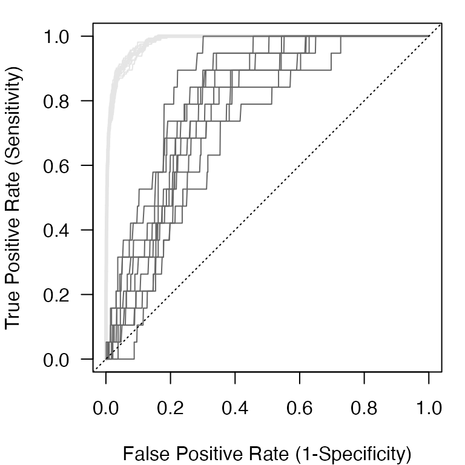

library(EnsembleRandomForests)
#> Loading required package: randomForest
#> randomForest 4.6-14
#> Type rfNews() to see new features/changes/bug fixes.
#> Loading required package: doParallel
#> Loading required package: foreach
#> Loading required package: iterators
#> Loading required package: parallel
# run an ERF on the provided dataset
ens_rf_ex <- ens_random_forests(df=simData$samples, var="obs",
covariates=grep("cov",
colnames(simData$samples),
value=T),
save=FALSE)
#> rounding n.forests to the nearest oneBackground
Internally, the ERF algorithm uses the ROCR package to calculate model performance. We can see how this occurs internally using the rocr_ens function on the provided dataset simData. The rocr_ens function calculates a battery of performance metrics based on the Receiver Operator Characteristic curve calculated from the ROCR package functions prediction and performance functions. The prediction function works on any set of predictions (ranging from (0,1)) and any set of observations (as a factor) and, likewise, the rocr_ens is a wrapper to do it in one step.
# the rocr_ens function takes the predictions (or true probability in this case)
# as the first argument. The true observations as a factor class are the
# second argument.
roc <- with(simData$samples,rocr_ens(prob, factor(obs,levels=c(0,1))))
# We can see all the performance metrics returned from the rocr_ens function
names(roc)
#> [1] "tpr" "tnr" "auc" "phi" "acc" "err" "fpr" "sens" "spec" "tss"
#> [11] "rmse"With the exception of the the area-under-the ROC curve (AUC), the true skill statistic (TSS), and the root mean squared error (RMSE) metrics, all others are calculated over a range of threshold values that split the continuous probability of presence predictions into binary (0,1) predictions. By comparing the true positive rate (TPR) or sensitivity to the false positive rate (FPR) or 1-specificity, we can visualize the ROC curve.
# We can visualize the resulting Receiver Operator Characteristic curve
# and add some of the threshold-free performance metrics (AUC, TSS, RMSE)
par(mar=c(4,4,1,1))
plot(roc$fpr@y.values[[1]], roc$tpr@y.values[[1]],
xlab = "False Positive Rate (1-Specificity)",
ylab = "True Positive Rate (Sensitivity)",
type = 'l', lwd=3, las=1)
text(0.6, 0.2, paste0('AUC = ', round(roc$auc,2)), cex=1.2, adj=c(0,0.5))
text(0.6, 0.125, paste0('TSS = ', round(roc$tss,2)), cex=1.2, adj=c(0,0.5))
text(0.6, 0.0525, paste0('RMSE = ', round(roc$rmse,2)), cex=1.2, adj=c(0,0.5))
Internal performance metrics
The ERF algorithm produces a set of ensemble, mean training set, and mean test set performance metrics in addition to the performance for the training and test sets for each Random Forests in the ensemble.
We can view the ensemble performance for the three key metrics evaluated in Siders et al. 2020: AUC, TSS, and RMSE. Generally, we want an AUC > 0.5, TSS close to 1, and a low RMSE for a high performing model.
Training and test threshold-free performance
We can also view these same metrics for mean across training and test sets.
# view the mean training threshold-free performance metrics for each RF
ens_rf_ex$mu.tr.perf
#> trAUC trRMSE trTSS
#> 0.9842532 0.3794589 0.8613219
# view the mean test threshold-free performance metrics for each RF
ens_rf_ex$mu.te.perf
#> teAUC teRMSE teTSS
#> 0.7518089 0.3902071 0.4926948Receiver Operator Characteristic Curve
We can also plot some of the threshold-dependent performance metrics. First, we can plot the ROC curve for the ensemble predictions.
# We can visualize the resulting Receiver Operator Characteristic curve
# and add some of the threshold-free performance metrics (AUC, TSS, RMSE)
par(mar=c(4,4,1,1))
plot(ens_rf_ex$ens.perf$fpr@y.values[[1]],
ens_rf_ex$ens.perf$tpr@y.values[[1]],
xlab = "False Positive Rate (1-Specificity)",
ylab = "True Positive Rate (Sensitivity)",
type = 'l', lwd=3, las=1)
abline(a=0,b=1,lty=3)We can see that the model does very well from the ROC curve as the solid line is well above the dotted line indicating the expected performance from random chance.
We can also view the training and test performance of every Random Forests within the ensemble.
# We can visualize the resulting Receiver Operator Characteristic curve
# and add some of the threshold-free performance metrics (AUC, TSS, RMSE)
par(mar=c(4,4,1,1))
#training FPR and TPR
fpr.tr <- lapply(ens_rf_ex$roc_train, function(x) x$fpr@y.values[[1]])
tpr.tr <- lapply(ens_rf_ex$roc_train, function(x) x$tpr@y.values[[1]])
#test FPR and TPR
fpr.te <- lapply(ens_rf_ex$roc_test, function(x) x$fpr@y.values[[1]])
tpr.te <- lapply(ens_rf_ex$roc_test, function(x) x$tpr@y.values[[1]])
#plot
plot(fpr.tr[[1]], tpr.tr[[1]],
xlab = "False Positive Rate (1-Specificity)",
ylab = "True Positive Rate (Sensitivity)",
type = 'l', lwd=3, las=1, col='gray90')
#each training ROC curve
for(i in 2:length(fpr.tr)){
lines(fpr.tr[[i]],tpr.tr[[i]], col='gray90')
}
#each test ROC curve
for(i in 1:length(fpr.te)){
lines(fpr.te[[i]],tpr.te[[i]], col='gray40')
}
abline(a=0,b=1,lty=3)
We can see above that the training set performance is higher than the test set performance. This is a common feature of machine learning algorithms. Siders et al. 2020 discusses the comparison between the ensemble performance and the test performance. Classification performance metrics are an area with considerable discourse that is beyond the purview of this vignette.
Thresholds
Thresholds are a common way to classify the continuous probability of presence predictions (bounded between 0 and 1) to binary predictions. There is some debate on the “best” threshold performance metric. See Liu et al. 2013 for a discussion of some of the commonly used thresholds in presence-only modeling that is relevant to ERF.
Below, we calculate the maximum sensitivity and specificity threshold. It is generally in the top set of thresholds when various thresholds are compared. It is by no means the only one we could calculate.
Ensemble threshold-dependent performance
# Get the index of the threshold (cutoff) value that gives
# the maximum sum of sensitivity and specificity (MSS)
thres.id <- which.max((ens_rf_ex$ens.perf$sens@y.values[[1]] +
ens_rf_ex$ens.perf$spec@y.values[[1]])-1)
# Get the threshold value
thres <- ens_rf_ex$ens.perf$sens@x.values[[1]][thres.id]
# Besides AUC, TSS, and RMSE, all other performance values were threshold-
# dependent of of class 'performance'. We can apply our MSS threshold to each
# of these and get performance metrics value at that threshold. We can also
# return the AUC, TSS, RMSE with the ifelse statement.
perf.val <- sapply(ens_rf_ex$ens.perf,
function(x) ifelse(class(x)[1]=='performance',
x@y.values[[1]][thres.id],
x))
perf.df <- data.frame(Metric = round(perf.val,3),
Name = c('True Positive Rate',
'True Negative Rate',
'Area Under the Curve',
'Correlation Coefficient',
'Accuracy',
'Error',
'False Positive Rate',
'Sensitivity',
'Specificity',
'True Skill Statistic',
'Root Mean Squared Error'),
lower.bnd = c(0,0,0,-1,0,0,0,0,0,0,0),
upper.bnd = c(1,1,1,1,1,1,1,1,1,1,1),
perfect = c(1,1,1,1,1,0,0,1,1,1,0))
knitr::kable(perf.df, caption = "Ensemble Performance")| Metric | Name | lower.bnd | upper.bnd | perfect | |
|---|---|---|---|---|---|
| tpr | 0.901 | True Positive Rate | 0 | 1 | 1 |
| tnr | 0.897 | True Negative Rate | 0 | 1 | 1 |
| auc | 0.970 | Area Under the Curve | 0 | 1 | 1 |
| phi | 0.331 | Correlation Coefficient | -1 | 1 | 1 |
| acc | 0.897 | Accuracy | 0 | 1 | 1 |
| err | 0.103 | Error | 0 | 1 | 0 |
| fpr | 0.103 | False Positive Rate | 0 | 1 | 0 |
| sens | 0.901 | Sensitivity | 0 | 1 | 1 |
| spec | 0.897 | Specificity | 0 | 1 | 1 |
| tss | 0.798 | True Skill Statistic | 0 | 1 | 1 |
| rmse | 0.379 | Root Mean Squared Error | 0 | 1 | 0 |
Test threshold-dependent performance
We can also perform the same procedure on the test performance by calculating a threshold for each test set for each Random Forests in the ensemble and calculating the performance. We can then take the mean across the test sets to get the mean test performance for a suite of metrics.
# Same procedure as above but on each test set
test.perf <- sapply(ens_rf_ex$roc_test,
function(x){id <- which.max((x$sens@y.values[[1]] +
x$spec@y.values[[1]])-1);
sapply(x, function(y) ifelse(class(y)[1]=='performance',
y@y.values[[1]][id],
y))
})
# Average test performance
test.perf.df <- data.frame(Metric = round(rowMeans(test.perf),3),
Name = c('True Positive Rate',
'True Negative Rate',
'Area Under the Curve',
'Correlation Coefficient',
'Accuracy',
'Error',
'False Positive Rate',
'Sensitivity',
'Specificity',
'True Skill Statistic',
'Root Mean Squared Error'),
lower.bnd = c(0,0,0,-1,0,0,0,0,0,0,0),
upper.bnd = c(1,1,1,1,1,1,1,1,1,1,1),
perfect = c(1,1,1,1,1,0,0,1,1,1,0))
knitr::kable(test.perf.df, caption = "Mean Test Performance")| Metric | Name | lower.bnd | upper.bnd | perfect | |
|---|---|---|---|---|---|
| tpr | 0.879 | True Positive Rate | 0 | 1 | 1 |
| tnr | 0.614 | True Negative Rate | 0 | 1 | 1 |
| auc | 0.752 | Area Under the Curve | 0 | 1 | 1 |
| phi | 0.142 | Correlation Coefficient | -1 | 1 | 1 |
| acc | 0.619 | Accuracy | 0 | 1 | 1 |
| err | 0.381 | Error | 0 | 1 | 0 |
| fpr | 0.386 | False Positive Rate | 0 | 1 | 0 |
| sens | 0.879 | Sensitivity | 0 | 1 | 1 |
| spec | 0.614 | Specificity | 0 | 1 | 1 |
| tss | 0.493 | True Skill Statistic | 0 | 1 | 1 |
| rmse | 0.390 | Root Mean Squared Error | 0 | 1 | 0 |